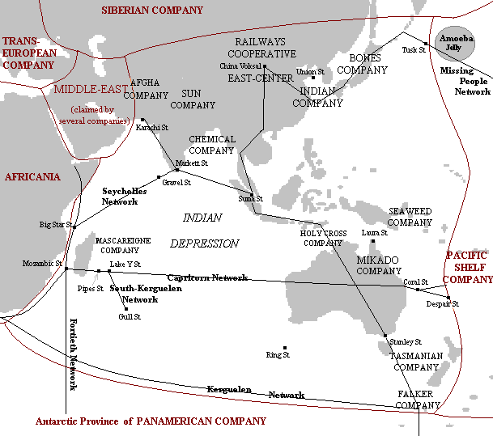

| plan du site |
La Fédération Australasienne en 2360
|  | |
|
Notes sur la carte La carte est cliquable Elle est une interprétation personnelle de ma lecture des Compagnie des Glaces. |
On devrait plutôt parler de désorganisation : C'était une fédération d'une douzaine de petites Compagnies ferroviaires aux motivations très diverses. On y trouvait trois sociétés anonymes avec des actionnaires qui recevaient des dividendes et veillaient à ce que leurs intérêts soient sauvegardés. Quatre coopératives de travailleurs du rail qui exploitaient leurs réseaux selon des normes précises de rentabilité, mais où chaque habitant dépendait étroitement du conseil d'administration. Deux autres petites sociétés appartenaient l'une à une famille depuis dix générations, l'autre à un seul personnage que l'on appelait le Mikado. Les autres compagnies étaient elle-même des fédérations d'une nuée de petites sociétés dont le plus pauvre ne possédait que quelques kilomètres de rails et la plus riche des milliers.
L'australasienne régnait mais ne gouvernait pas, si bien que la plus grande fantaisie sévissait un peu partout et principalement dans les horaires. (G-J Arnaud, Le Gnome Halluciné CG-7).
C'est donc une Fédération qui se compose de :
On le voie, les compagnies ne sont pas perpétuelles, il s'en crée et il en disparaît en permanence. Une administration suit ces évolutions et tente de les administrer et siège à Stanley Station. C'est dans cette station que se trouve la Federal Bank et où vivent les Tarphis qui sont les agents de la Compagnie Panaméricaine.
Le président change tous les six mois
La Dépression Indienne est une zone très faiblement peuplée où les tempêtes sont fréquentes, dévastatrices et très meurtrières.